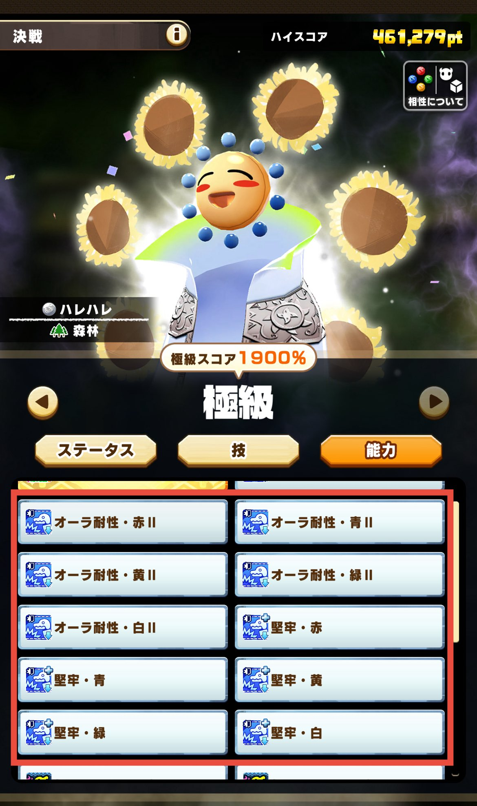
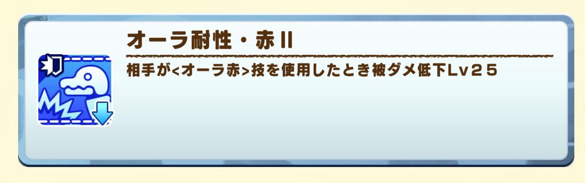
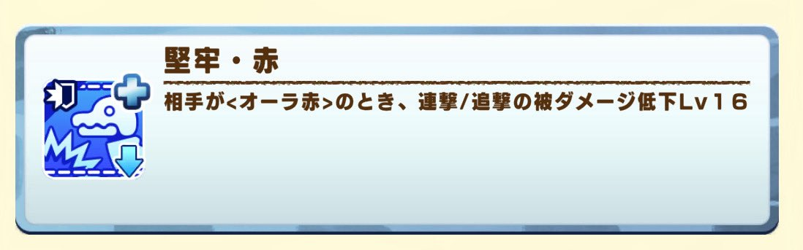
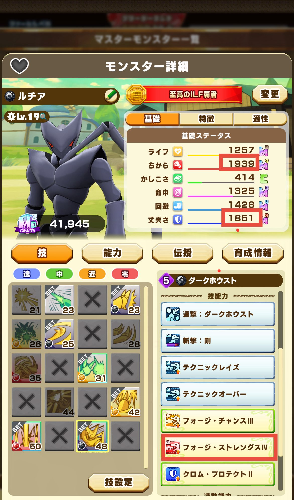
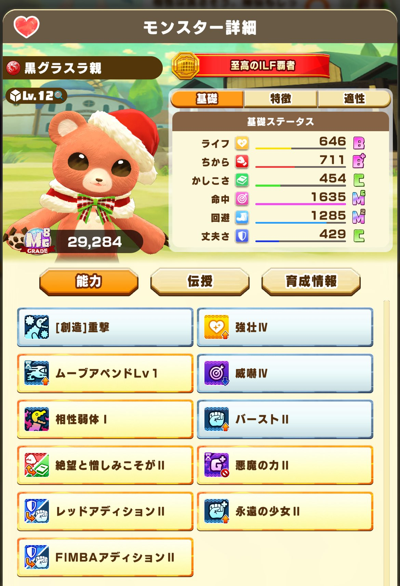
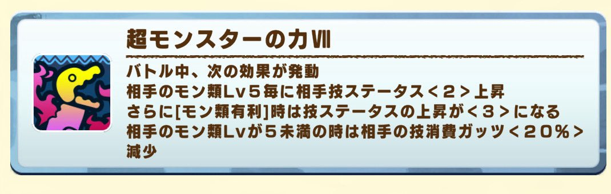
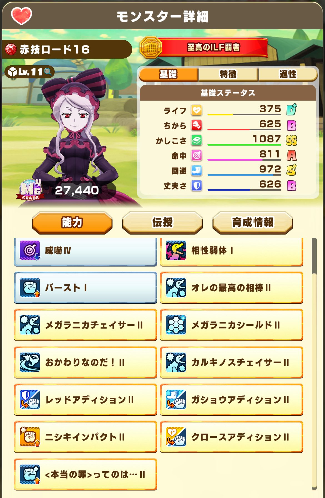
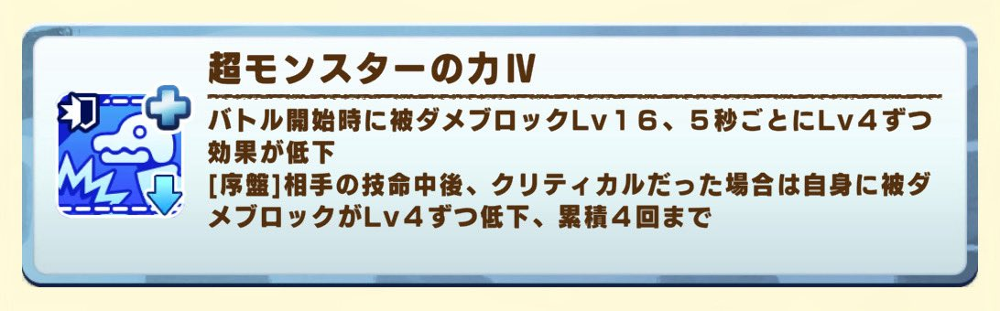
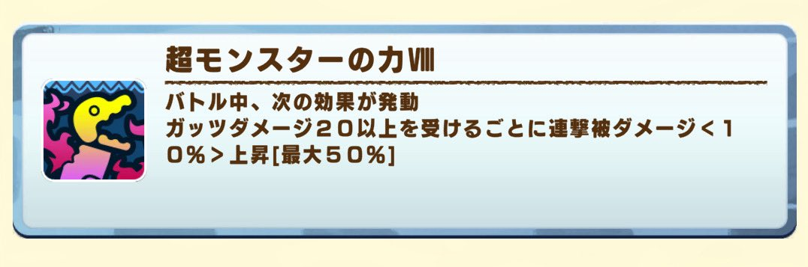

1️⃣ 選定編（最重要）
モンスターの選定基準
- ① オーラ有利かつモン類有利モンスター
- ② オーラ有利モンスター
💡 当月ガチャモンスターが該当することが多い



補足
火力の高い技、連撃数が多い技を持っていることが重要
注意点
⚠️ 火力が高いだけでは上限に届く
→ 連撃％と連撃数のバランスを意識する
技設定
技能力が乗るため、関連するステータスアップ能力を可能な限り多く設定する

アシカ編成（超重要）
能力優先度（数字が小さいほど強い）：
| 優先度 | 能力 |
|---|
| 1 | 攻撃ステータスアップ系（アディション等） |
| 2 | ダメージ割合連撃 |
| 3 | ガッツ回復系 |
💡 メインダメージが上限に届かない場合
→ 与ダメ上昇系や超本気なども有効
基本的に入れない能力
⚠️ ステータス割合連撃
→ ライフ調整が難しくなるため

積む数の目安
- ロードなし：4〜6個前後
- ロードあり：6〜12個程度
編成の重要ポイント
- 能力の影響が非常に大きい（ステータスの影響は低め）
- ※ただし高いに越したことはない
- モン類レベルを意識する
- 地形適性の影響が大きい
- 距離適性の影響も大きい

💡 重要
ロード秘伝に影響するため、この段階で能力構成を確定させること
⭐ ワンポイント
金能力未取得による育成失敗を防ぐため、ロード秘伝に必要な能力を極力積んでおく
2️⃣ 秘伝準備編
モンスターが決まったら秘伝を準備する。※相性は割愛
ノラモン秘伝 ★★★☆
構成例
序盤フォイル系（最大4つ）
- マグマハート：アタックフォイル
- グジラキング：フレアフォイル
- フェニックス：レンジフォイル
- スナイプ：ゲイルフォイル
ブリッツ系（距離ごとに最大1つ）
- 零距離：マグマハート（ゼロブリッツ）
- 近距離：グジラキング（ニアブリッツ）
- 中距離：フェニックス（ミドルブリッツ）
- 遠距離：スナイプ（ロングブリッツ）
チェイス系（近距離・中距離）
- 近距離：ムネンド（ニアチェイス）
- 中距離：カムイ（ミドルチェイス）
フィクスブリッツ
💡 序盤以外のフォイルが有効な場合もある
ボスモンとの両立は難しい
地形秘伝 ★★★〜★★★☆
基礎ステータス割合上昇
💡 能力との組み合わせで評価が変動
決戦では特に有効
距離秘伝 ★★☆〜★★★
技ステータスに影響
💡 距離依存能力に必要な分は確保する
地形ほどの影響力はない
ロード秘伝 ★★★★★（上級者向け）
自由に能力付与可能・金能力の確保が可能
目標：
⚠️ 作成難易度が非常に高い
理解するまでが難しい
ノーブル秘伝が付けにくく相性値を上げづらい

3️⃣ 育成編
持ち込みアイテム
→ アシカイベント消化目的で有効
💡 代替パターン
相性が取れない＋うけつぎ草が多い → ガロエジュース＋うけつぎ草
オイリーに余裕あり → ガロエジュース＋オイリー
イベント消化が十分＋ステータスを伸ばしたい → ガロエジュース＋ブリーダーライセンス
厳選（スタートライン）
以下が揃うまでリタマラ：
- ボスモン能力2種
- 距離適性、地形適性が良好
- 有効ノラモン能力が揃っている
- ※ステータスは優先度低め
💡 上位狙いは先導の伝授も確保したい
育成中のポイント
- 事前に決めた能力は必ず全て取得する
- 能力に合わせて適性を強化する
- 能力変換は攻撃系ステータス上昇を優先する
優先能力変換
最低ライン
- どれだけ仕上げられるかがすべて
- 自己満の世界
- 1位かそうじゃないかにラインがある
⭐ ワンポイント
ロード閃きは運要素がある
ただし能力取得を最優先に判断する
5️⃣ バトル編
持ち込みアイテム
⚠️ 必ず超ご機嫌で挑む
立ち回り
①
フィニッシュは41〜45秒を狙う
（ブロック軽減のタイミング）

③
ガッツダメージ20以上を与える
→ 連撃ダメージ上昇（最大5回）

④
フィニッシュ時の状態
・自分のガッツは高く保つ
・相手のガッツは低くする
⭐ ワンポイント
距離調整、攻撃回数、時間管理の精度が結果に直結する